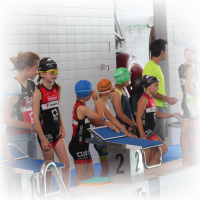

Stad Eeklo schrapt alle sportevenementen tot eind oktober

De heropflakkering van het corona-virus en de verstrenging van de maatregelen zorgen er nu ook voor dat de zwemloop in Eeklo van 21 augustus werd geannuleerd. Zo kreeg het Meetjeslandse SMO-SCOTT Triatlon Team een negatief advies van de lokale overheid. De stad Eeklo verbiedt alle sportevenementen tot eind oktober en ook de openbare sportinfrastructuur werd plots gesloten tot eind augustus.
Het bestuur van SMO-SCOTT was enkele weken geleden nog positief na de geslaagde testevents in Oudenaarde, Willebroek, Lokeren en Jabbeke. Verschillende organisatoren en openbare besturen toonden hoe een sportevenement veilig en volgens de opgelegde regels perfect kon georganiseerd worden. Ook bij de Meetjeslandse triatlonclub werden de nodige veiligheidsmaatregelen en aangepaste protocollen goed voorbereid, maar tevergeefs.
Alle deelnemers werden hiervan door de organisatoren schriftelijk op de hoogte gebracht. De atleten hoeven hiervoor geen verdere stappen te ondernemen en het volledige inschrijvingsbedrag wordt door Triatlon Vlaanderen integraal terugbetaald aan alle deelnemers.
Het triatlonkamp van 17 tem. 21 augustus in en rond het Eeklose sportpark kan wel gewoon doorgaan volgens de richtlijnen met zo’n 40 sportievelingen. Enkel het slotevent op vrijdagavond valt voor hen in het water, maar de lesgevers zullen de kinderen ongetwijfeld een onvergetelijke en actieve week bezorgen.
Op zaterdag 12 september staat de startdag van de triatlonschool terug op het programma in Eeklo. Inschrijven voor de verschillende leeftijdsgroepen kan via https://app.twizzit.com/v2/public/form/89f34ab9edfb6a60f00e8c27edafe4ec
Voor meer info en vragen kan je terecht bij jeugdcoördinator Steven Haeck (0476 90 70 29).
Hopelijk mogen we iedereen terug ontvangen tijdens één van onze organisaties in 2021. Hou het veilig en blijf vooral in beweging!